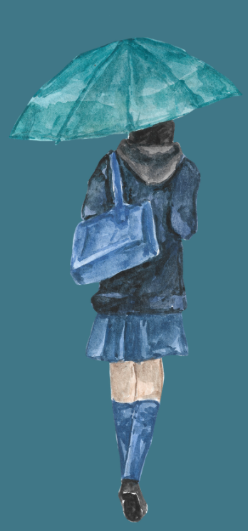

Standing up for yourself is a remarkable, brave thing to do. However, with emotionally abusive individuals, you may leave a conversation where you intended to "clear the air" feeling:
Select any feelings you experienced after the conversation:
Write out your intentions going in, what you hoped would happen, and how you actually felt afterwards. Seeing it laid out can help you spot where things were turned around on you:
This is not your fault. It’s not your fault that your communication, a valuable trait, was not appreciated or treated with respect. In healthy friendships, clear calm communication explaining how you feel will be met with equally calm responses. Your friends want you to be happy. Your true friends don’t want to make you feel upset. Your friends will approach your concerns with understanding. Deeply insecure or manipulative people will not.
But what might have happened in the conversation? Here are some common abusive reactions you may have encountered. Reading through this will hopefully leave you feeling more validated that you aren’t going crazy and were actually just hurt more.
Click on any reaction below to learn more about how it works:

At your age, you shouldn’t have to go through such calculated behaviour. These people are afraid of being exposed, and that fear is so great they hurt and silence others to protect it. What makes things even more confusing is that you may even be accused of doing these exact things.
How many things did you experience? Just know that no matter how many, you didn’t deserve any of it. Even experiencing one of these things is serious enough. It is not about ticking every box for what you went through to be considered abusive. If it left you feeling the ways described at the start, then there has been damage done to you and wounds left behind that cannot be denied.
It’s not your fault for having the conversation in the first place. Remember your age, and remember that this person was supposed to be your friend.
You were treating them like a friend. You may have not known the bad signs that they’d react like this. You may have thought they were never capable of hurting you so much. That is a sign of your own good nature. And that good nature hasn’t changed just because you are now identifying the worst traits in someone else.
It’s incredibly frustrating when you do what you’ve often been told is the "right" thing, yet things just seem to become worse.
It’s difficult, and you may have regrets. But don’t underestimate your strength. You made it out of that conversation, so you can make it out of the pain it has caused in you. Head over to our healing page if you’d like to receive some support.